CADEV 2026 · Équipe 7's

226 Open Stack : 226, l'indicatif du Burkina Faso.
Né au Burkina Faso, ouvert à l'Afrique de l'Ouest, puis à tout le continent
Dossier de présentation du projet : vision, positionnement, périmètre, architecture et qualité. Il s'adresse au jury et à l'équipe, et ne remplace pas les spécifications détaillées.
Référence produit : PRD version 3.3 du 15 novembre 2026 (amendement 3.3, positionnement).
Les connaissances techniques, les ressources locales, les projets et les occasions de collaborer sont dispersés entre forums, dépôts GitHub, groupes de discussion et réseaux sociaux. Les développeurs peinent à retrouver des solutions documentées, à savoir quelles API existent dans leur pays, à rendre leur travail visible et à trouver des collaborateurs. La diversité des langues et les connexions limitées compliquent encore ces usages.
Beaucoup de solutions techniques africaines existent déjà, mais restent peu connues de ceux qui pourraient s'en servir.
226 est l'indicatif du Burkina Faso. 226os veut d'abord devenir la référence des développeurs, ingénieurs et techies burkinabè, puis s'étendre dans la sous-région par des partenariats, puis à l'Afrique.
Les membres, les solutions faites au Burkina (paiement mobile, agritech, services publics numériques) et le contenu de lancement.
Chaque partenariat (communauté tech, hub, école) apporte ses membres, son contenu et ses solutions.
Une plateforme ouverte à tous dès le premier jour.
La plateforme reste ouverte à tous : l'ordre Burkina, sous-région, Afrique guide le contenu de lancement, l'effort communautaire et les partenariats, pas l'accès. Découvrir affiche l'Afrique de l'Ouest par défaut, et toute l'Afrique en un clic.
Le but n'est pas d'ajouter un forum, un annuaire d'API ou un réseau professionnel de plus, mais de raccourcir le chemin entre un problème rencontré, une solution documentée et une contribution que d'autres peuvent réutiliser.
Apprendre et Connect sont mis en avant ; Résoudre, Découvrir et Construire restent des piliers à part entière, dans la même navigation.
Articles et tutoriels écrits par des développeurs, formations gratuites lisibles sans compte, filtre par sujet ; publication ouverte aux membres.
Annuaire des développeurs par pays, langue et compétence ; chacun choisit ce que son profil montre.
Une question avec son code, des réponses, des votes, et la réponse qui a débloqué marquée par l'auteur.
Les API et outils africains avec leurs pays, leur catégorie et leurs sources.
Un projet open source publié depuis son dépôt GitHub, ses besoins de contribution et les candidatures reçues.
Mentorat, espaces communautaires et opportunités sont prévus après ce socle et sont affichés « Bientôt » dans l'interface.
226os est une application client-serveur avec un backend en monolithe modulaire : les domaines métier sont séparés dans le code mais livrés comme une seule API REST, décrite par un contrat OpenAPI. Une seule base PostgreSQL porte les données et la recherche.
| Composant | Rôle |
|---|---|
| Client web | Parcours publics et connectés, traductions français et anglais ; il appelle l'API par un client typé, généré depuis le contrat. |
| Point d'entrée | Traefik en HTTPS : routage et TLS. C'est le seul service exposé ; la base reste sur un réseau privé. |
| API métier | Monolithe Go. Les modules identity (dont l'annuaire Connect), learn, solve, discover, build, search, assistant et moderation existent ; chacun suit les couches domaine, service, dépôt et transport. Validation et droits d'accès sont vérifiés côté serveur. |
| Base de données | PostgreSQL : comptes, contenus, liens entre contenus, droits et transactions ; recherche plein texte indexée et migrations versionnées. |
| Intégrations | GitHub pour les métadonnées des dépôts publics ; un fournisseur de modèle de langage pour l'assistant, derrière un port interchangeable. |
| Exploitation | Conteneurs Docker, configuration reproductible, secrets chiffrés, sauvegarde et restauration, procédure de déploiement et de retour arrière. |
Les intégrations externes sont appelées par le backend seulement. Les droits d'accès ne dépendent jamais de la seule interface.
| Couche | Technologies |
|---|---|
| Frontend | React 19, TypeScript, Vite, TanStack Router, Query et Form, Meta Astryx avec la direction Graphite & Lime. |
| Backend et contrat | Go, Chi, pgx, sqlc ; API REST décrite en OpenAPI 3.1. |
| Données et recherche | PostgreSQL, recherche plein texte, index GIN, extension pg_trgm. |
| Assistant | Google AI Studio, famille Gemma 4, derrière un port indépendant du fournisseur. |
| Infrastructure | Docker, Docker Compose, Traefik, HTTPS ; hébergement visé : Datacloud. |
| Automatisation | Make pour les commandes communes, GitHub Actions pour la CI et la revue. |
Chaque pull request passe les mêmes contrôles en CI, et make quality les lance en local :
Une revue par IA lit chaque pull request ; une pull request propre est fusionnée automatiquement, et le propriétaire du dépôt intervient sur les cas critiques, les chemins sensibles et la mise en production. L'usage de l'IA est déclaré, fiche par fiche, dans le dépôt.
Le MVP tourne sur la branche d'intégration et la mise en production se prépare. Les tests de bout en bout dans le navigateur et les tests de performance ne sont pas encore en place.
Dépôt Git, application réellement utilisable avec une démo en ligne, déploiement sur au moins un service Datacloud, traçabilité des composants tiers et de l'usage de l'IA.
Produit : 226os · Équipe : 7's · Concours : CADEV 2026
Dépôt : github.com/Y4NN777/226os
Document de référence : PRD version 3.3, 15 novembre 2026
Domaine : 226os.tech